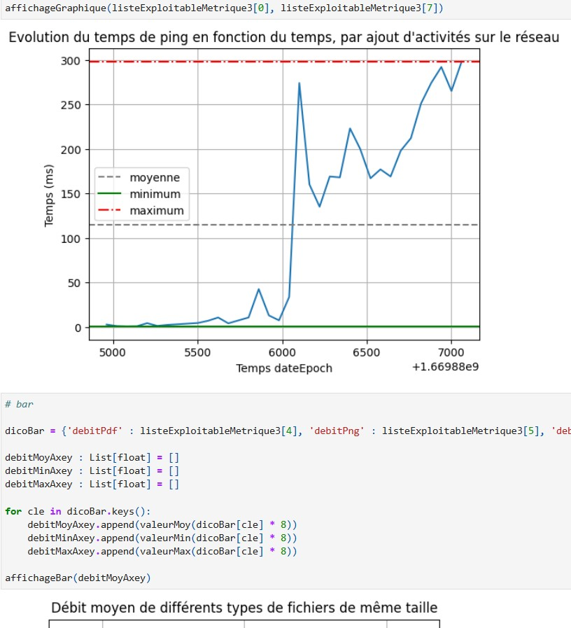
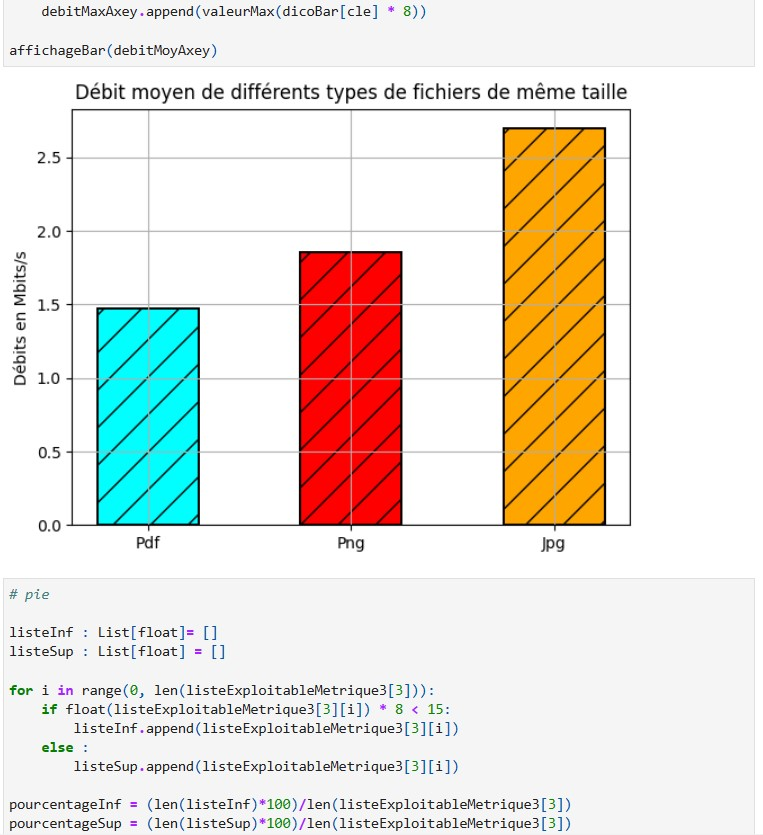

Projects
Raspberry Pi Robot
-
(Intelligent System Programming)



Supervision of Networks Activities
-
(Data Collection & Analysis)


Pentest of an HTTP Server
-
(Cybersecurity Foundations)

Company Network Design
-
(Scalable Architecture)


Web application
-
(Data Management Interface)